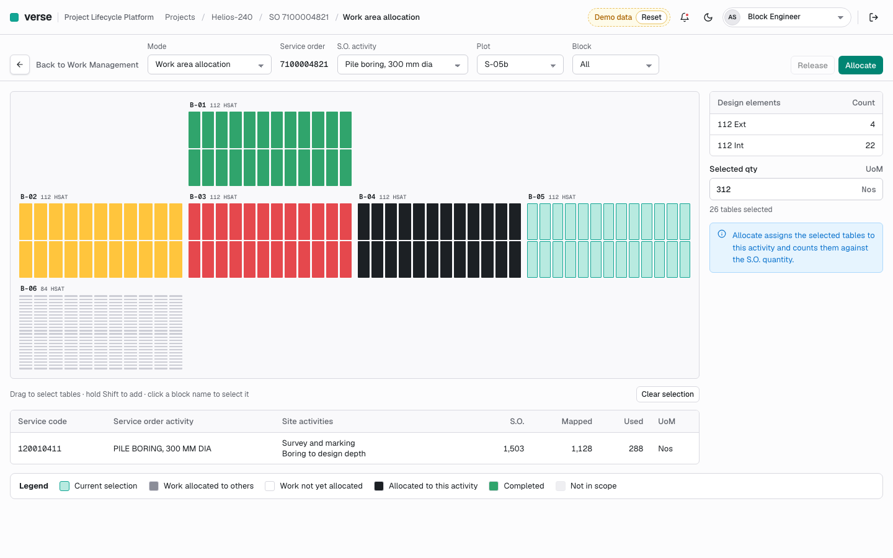
Bringing solar construction work, from BoQ to service order to material, into one platform
Verse - DRS
From scattered files to one digital platform
Building this solar plant ran on spreadsheets and shared files. Excel trackers, AutoCAD drawings, material request forms and signed documents. Only orders and stock lived in SAP. DRS brings the whole process into one platform: every BoQ, work allocation, material request and quality check is now routed to the exact table on the plant, in one platform.
A utility-scale plant is built table by table: plots split into blocks, blocks into rows of tracker tables. Contractors are paid against service orders in SAP, but the work between the order and the ground was tracked by hand.
"Routing" is the idea: an order line goes from SAP to a block on the drawing, then to a material request and the store, and comes back as a certificate for billing, without the hand-offs in between.
Client, site and all data are anonymised. Verse and the plant location are placeholders; the work is real and covered by an NDA.
A plant run on paper and files
SAP held orders and stock, but the work in between, who builds where, what material goes out, what is finished, moved through spreadsheets and lived in shared folders.
What that meant every day
No single view: the real status of a block was spread across files held by different people and offices.
Slow and re-keyed: every slip and register entry was typed into SAP again, by hand.
No trace: a lost or unsigned page meant nobody could show where material went or why extra was issued.
From files to platform
End-to-end: I led the product design, from mapping the process with each business function to the design system and an interactive prototype.
- Product
- DRS web platform
- Platform
- Enterprise web, desktop first
- Client
- Verse, renewable energy (anonymised)
- Status
- Live since mid-2026; results measured over the next financial year
- Worked with
- Product, engineering and four business functions
Problems and solutions
Problems
Solutions
Projects only existed once SAP created them after award, so Pre-Bid BoQs had no home.
Create a project at Pre-Bid with five fields; link it to SAP later with validated project codes and it moves to Awarded.
BoQs and drawings were kept as separate Excel and AutoCAD files, versioned by hand.
Versioned BoQs and drawings in DRS, with a mandatory change reason, rollback, and BoQ generated from drawing layers.
Nothing linked a service order activity to a physical area, so contractor responsibility was unclear.
Map-first allocation: drag across tracker tables on the plant drawing; quantities count against the S.O. as you select.
Material could be requested beyond planned limits, and shortages surfaced when a crew was waiting.
Requests capped at mapped minus issued; extra quantity needs a reason and Plot Head approval; stock shown beside every line.
Store issues were kept in trackers and re-typed into SAP, so nobody saw which block material went to.
Every reservation is tied to blocks and tables; issues and returns post in SAP and sync back, with a DRS vs SAP discrepancy flag.
A block could look finished while its material was never formally issued or its inspection never closed.
Completion only on tables with material issued, a six-gate block status, and measurement approval before a WMC.
Closing a service order meant reconciling stock by hand across spreadsheets.
An S.O. closes only when four conditions hold: nothing more to map, mapped = used, no open MR, used = issued.
Five decisions that shaped DRS
The product went through 9-10 versions. These are the calls that changed its direction, and why.
Start at project creation, not on a map of India
First version: a map of all project locations, then drill into one. The internal team liked it.
What changed: in client discussions it did not fit how work begins, so the product opens on project creation, where the process starts.
Left navigation that opens a second panel, not a dropdown
First version: a left nav with nested dropdowns.
What changed: client and internal management asked for the left nav to stay, but each item now opens its 6-7 sub-items in a panel beside it. No usability issues have been reported.
Keyboard-first, because users lived in Excel
Insight: the users worked in spreadsheets all day, so a mouse-driven product would slow them down.
Decision: shortcuts and keyboard operation across the main tasks, so familiar speed carries over.
Assign work areas on the plant map
Problem: allocating work areas to plots, then assigning and returning material, was the hardest part of the process.
Decision: select tables on the drawing, since engineers think in layouts rather than codes, and show allocation and material status on the same map.
Design the Excel structure with the client before building
Problem: the existing sheets were not maintained or formatted consistently.
Decision: we proposed the sheet structure, the client filled it in, and then we built the import and screens around that data.
Mapping the process with every function
Process discovery
Business functions mapped: PMAG, Engineering, Projects and Store, each signing off its own To-Be process.
User roles, from Super Admin to Block Engineer and Store Manager, with a module access matrix.
Project stages, Pre-Bid to O&M, with DRS covering Pre-Bid to QC.
Reports and KPIs requested, from material plan vs actual to contractor reconciliation.
As-Is landscape
Before DRS
Apart from SAP, each function kept its own spreadsheets and files.
With DRS
SAP remains the system of record; DRS adds the drawing, the routing and the checks.
Qualitative insights (from process walkthroughs with each function)
Pain points: re-typing request forms and trackers into SAP; no picture of which contractor works where; extra material requested without a recorded reason; reconciliation done by hand.
Desired features: allocate on the drawing, see stock while requesting, approvals for exceptions, version history with reasons, one dashboard per project.
Concerns: two copies of SAP data drifting apart, and losing control of who can change what.
Goals and behaviours
- Give each contractor a clear area of work
- Get the right material to that area on time
- Close work and service orders cleanly
Challenges and pain points
- S.O. activities aren't linked to the drawing
- No easy check against planned quantities
- Closing an order means reconciling paper files
Desires
- "Let me mark the blocks, not type their codes"
- See stock before raising a request
- Know when material is issued
Works with
- Service orders from SAP
- The site layout drawing
- Stores, the Plot Head and contractors
Kavita · Plot Head
Keeps her plot on plan and controls exceptions. Approves extra-quantity requests with their reason beside them, and approves measurements before a WMC.
Arjun · Store Manager
Issues against valid requisitions and accepts only valid returns. Sees the reason on every exception and the block each issue goes to.
Rohan · Design Engineer
Owns BoQs and drawings. Imports from a similar project, versions every change with a reason, and generates quantities from drawing layers.
Meera · Project Control Manager
Registers bids at Pre-Bid so engineering can start early, then links awarded projects to SAP without re-keying.
Sandeep, Block Engineer. Built from the persona and the process walkthroughs.
Think and feel
- "Which blocks did I already give to this contractor?"
- Pressure when a crew is idle waiting for material
- Worried about over-requesting and audits
Say and do
- "Is the steel for B-04 issued yet?"
- Marks blocks on a layout drawing
- Sends request forms to stores and chases signatures
Hear
- Contractor: "Material isn't here, we can't start"
- Stores: "Raise the request again, with the code"
- Plot head: "Why do you need more than planned?"
See
- SAP screens full of codes
- Spreadsheets, trackers and drawing copies that don't agree
- Blocks that look done but aren't certified
Pains
- Translating the drawing into codes every day
- Not knowing stock before asking
- Manual reconciliation of files at closure
Gains
- Allocate by dragging on the drawing
- Requests checked as he types
- An order that closes itself when material balances
One service order from Pre-Bid to closure, across five roles.
Are we on plan, and what's stuck?
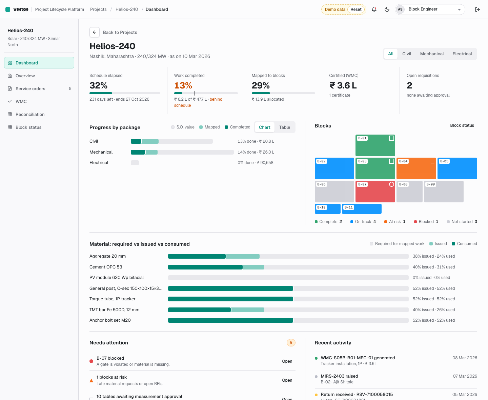
From Pre-Bid to a versioned BoQ
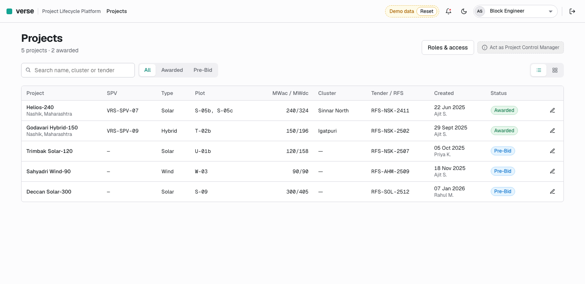
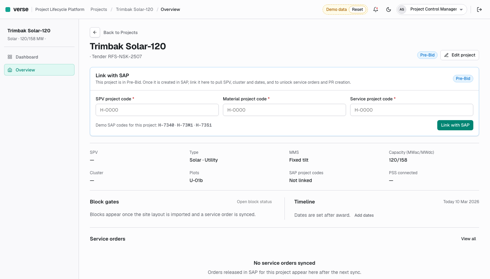
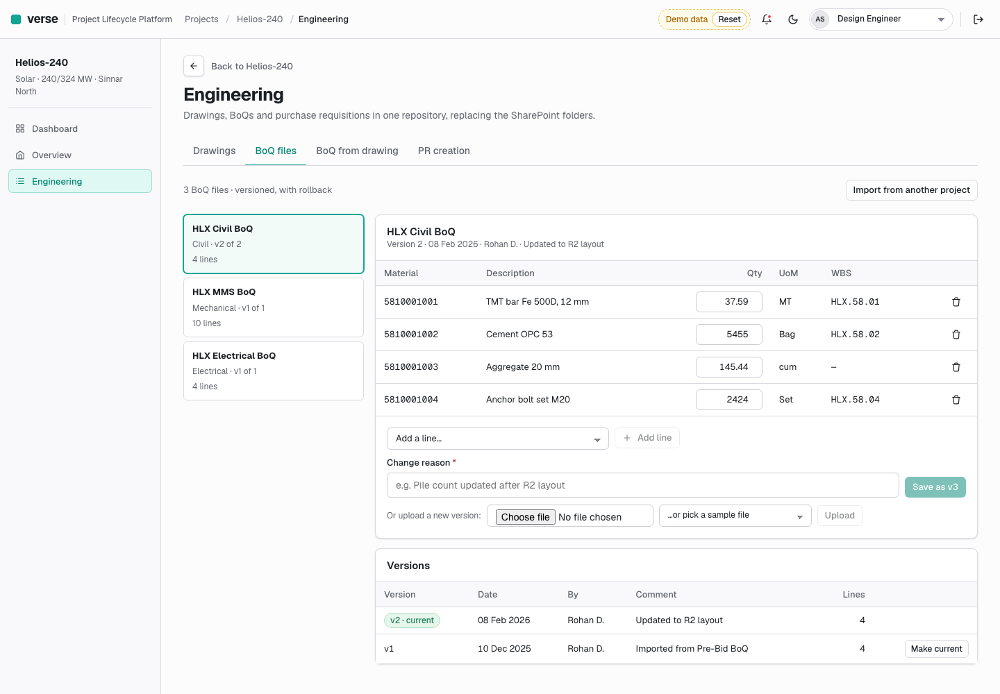
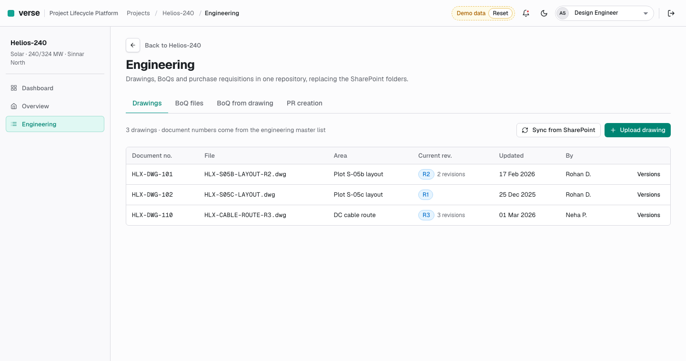
Read from SAP, configured for the site
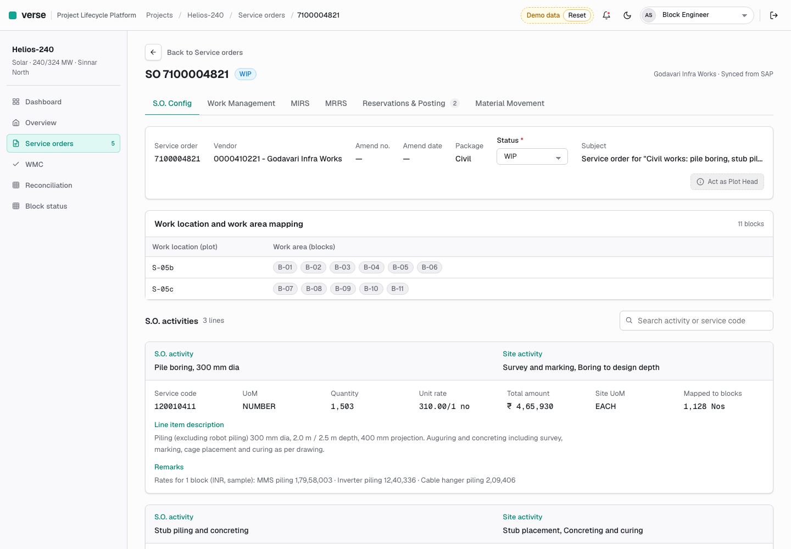
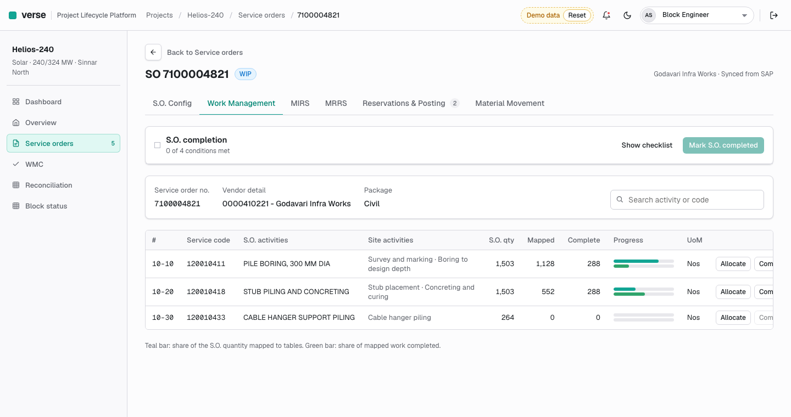
One drawing, three jobs
Engineers think in the drawing ("the two blocks past the inverter"), so the drawing became the input. The same map switches between allocation, completion and requisition, and colours each table by its state.
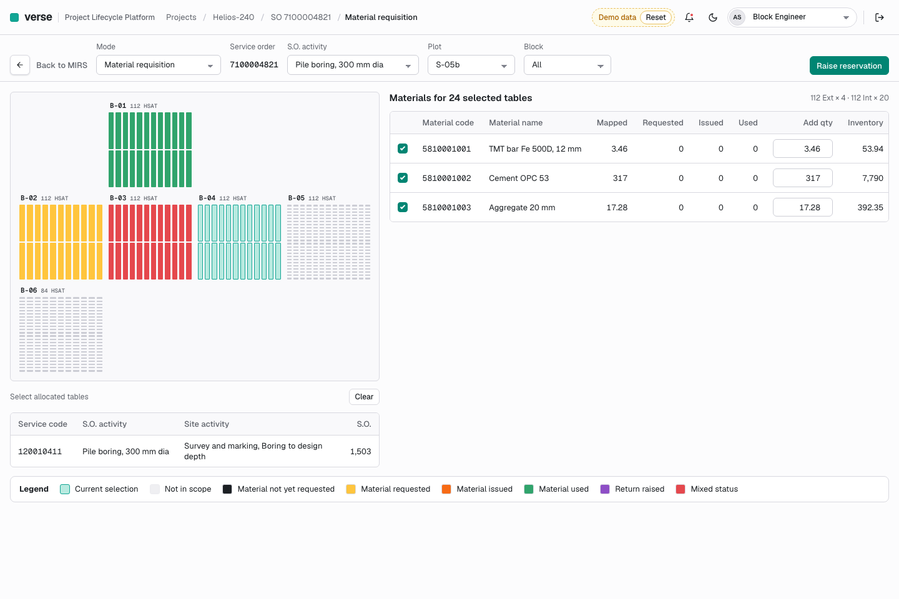
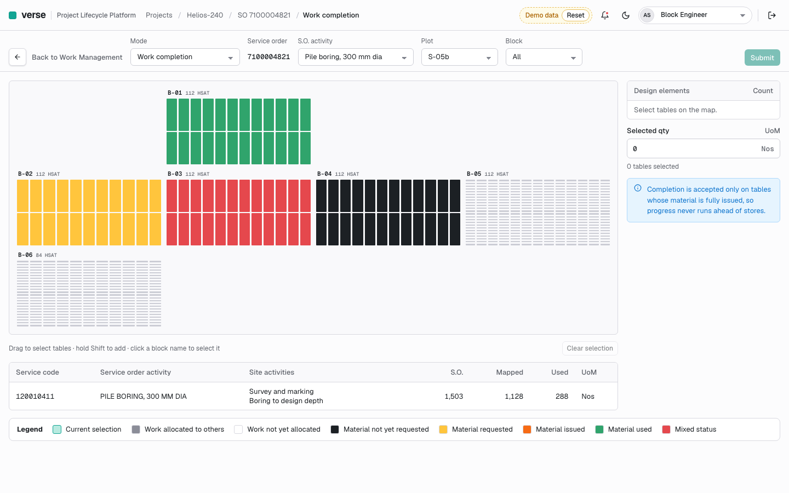
SAP stays the record; DRS shows where it went
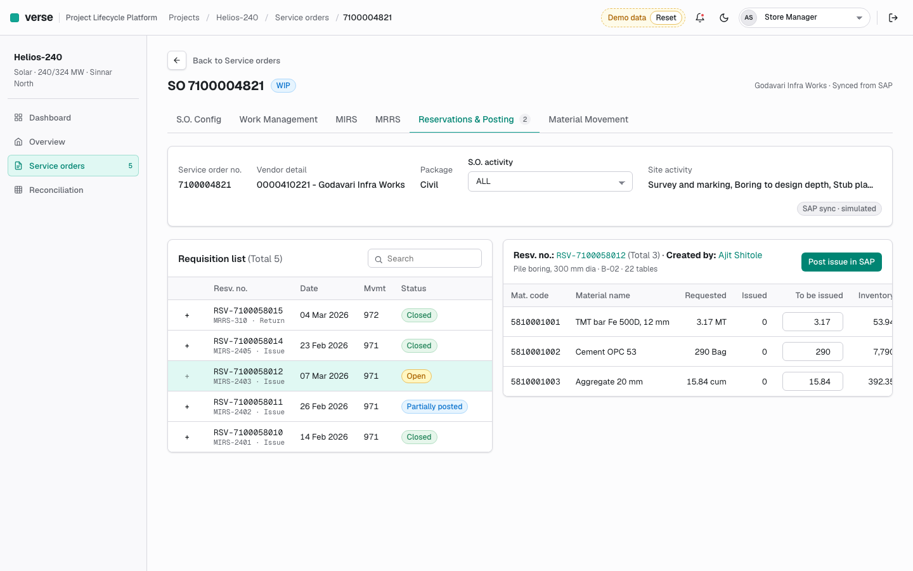
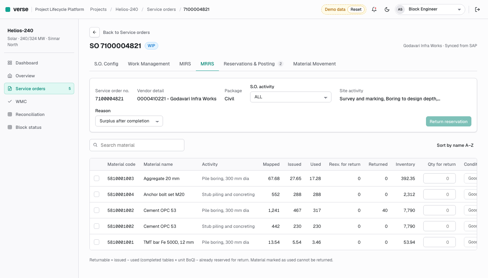
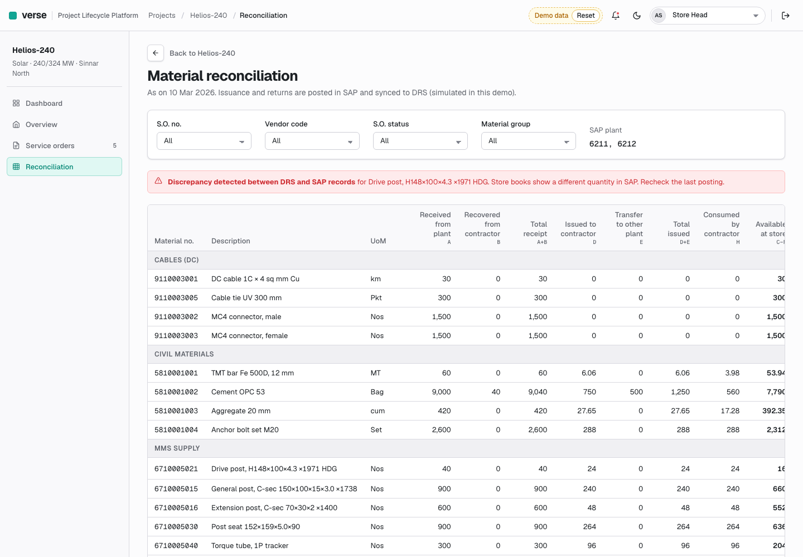
"Complete" means every gate passed
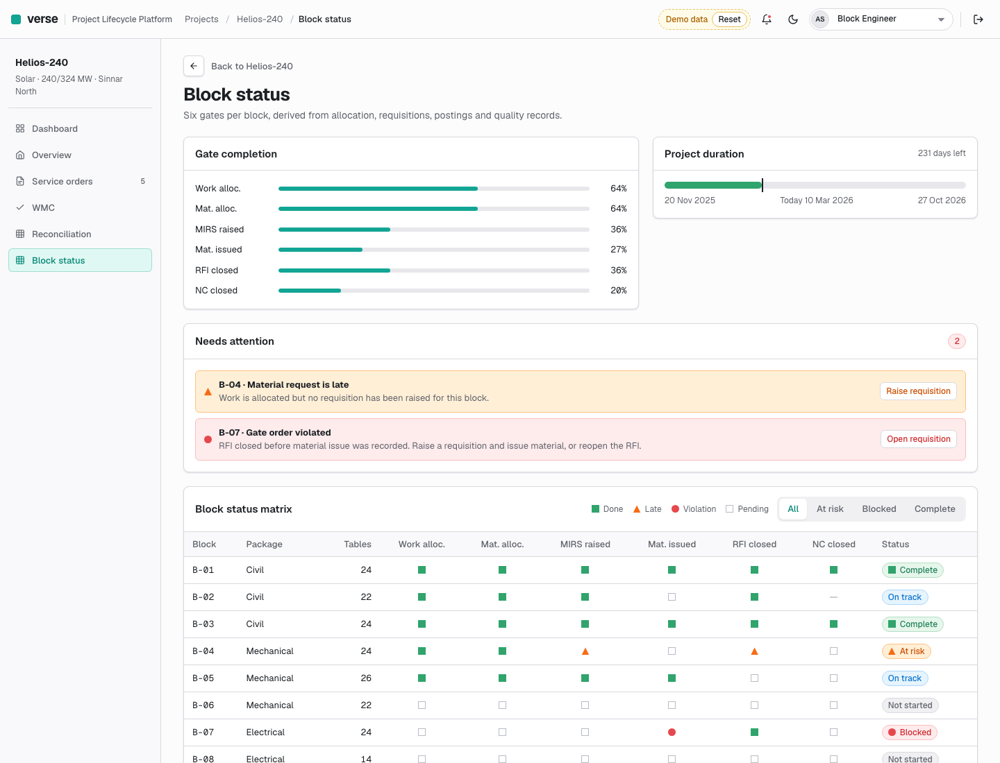
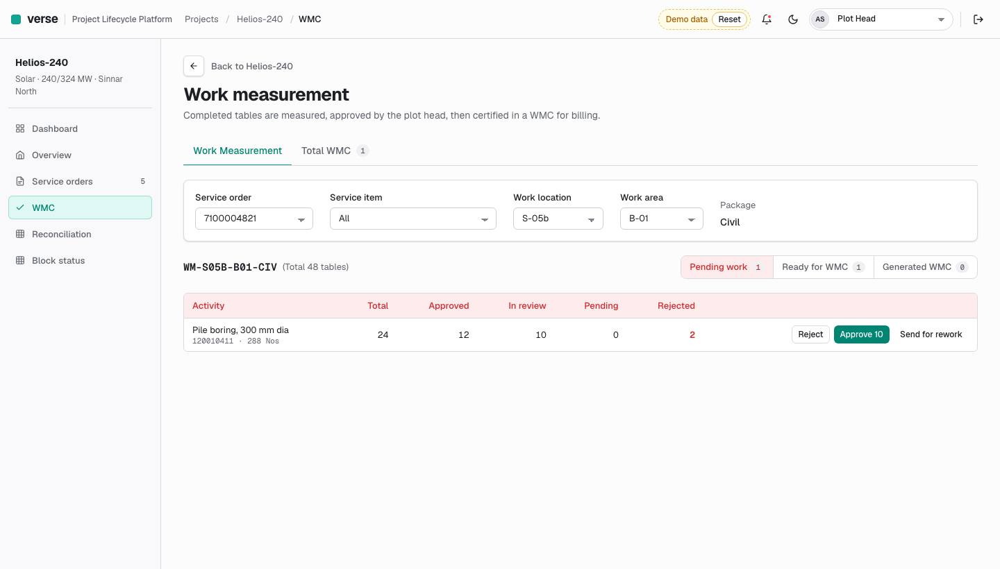
The right screen for each of 16 roles
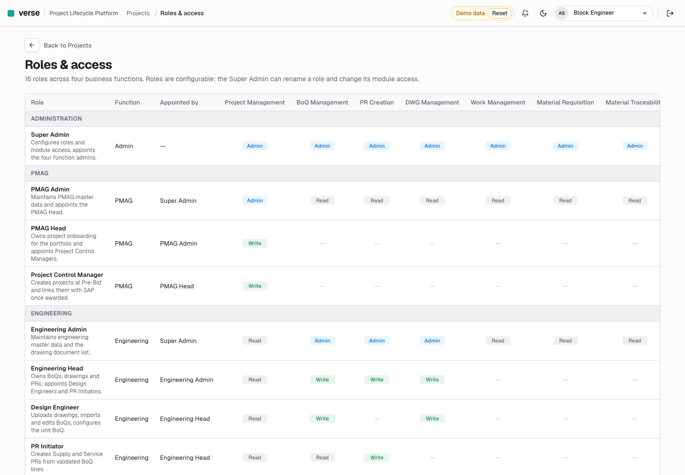
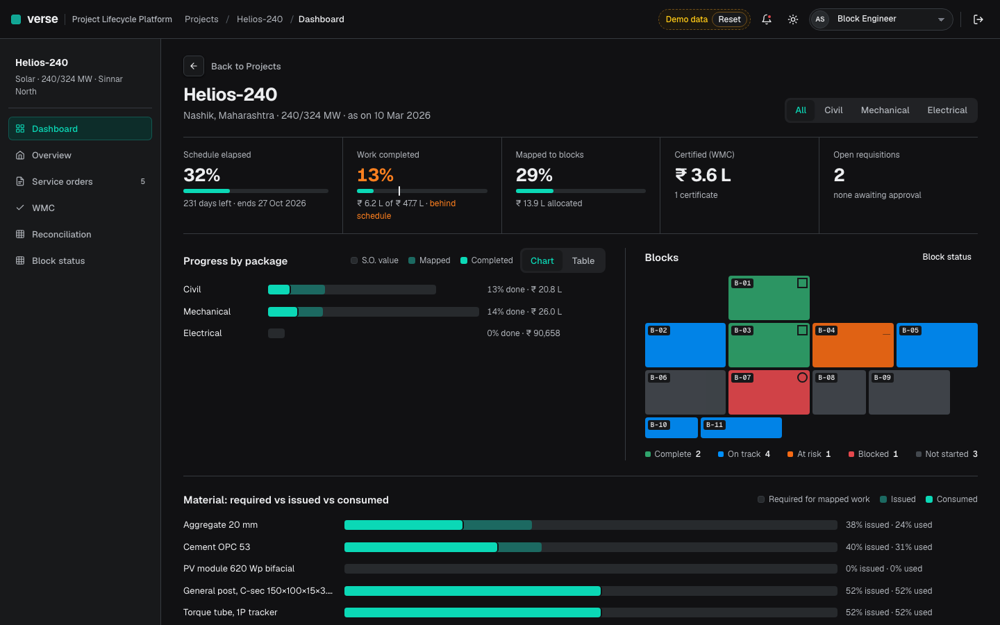
Geist
ABCDEFGHIJKLMNOPQRSTUVWXYZ
abcdefghijklmnopqrstuvwxyz
1234567890 · 18,000 Nos · ₹ 3.6 L
7100004821 · B-04 · RSV-7100058014
Geist reads cleanly in dense tables and has tabular figures, so quantities line up. Codes such as S.O. numbers, blocks and reservations use the mono cut so they scan as identifiers. Quantities are right-aligned with units in their own column.
Helios-240
Work area allocation
Material issue request slip
Raise reservation · Post issue in SAP
Pile boring, 300 mm dia · 1,503 Nos · 29% mapped
shadcn/ui components coloured with Radix scales. One accent; status colours keep their meaning and always carry a shape.
Accent · Radix teal
Neutrals · Radix slate
Status, with shapes
A plain wordmark. Lowercase Geist, so the product name never competes with the data in the header.
The square. One tracker table seen from above: the unit everything in DRS is routed to.
Placeholder brand. Built for this case study to replace the client's identity under NDA.
What review changed
What's next
- Field modeA tablet layout for site walks, with large targets and offline drafts.
- Measure the routeTime from S.O. to first allocation, and from requisition to issue.
- RFI and NC in DRSInspection requests and non-conformance with site photos on the block.
What I'd do differently
Get closer to the people who use it
The client confirmed the business process, but not how each of the 5-6 roles works day to day. Next time I'd ask for short observation sessions with each role before the first design, instead of relying on the process document alone.
Agree how success is measured before launch
DRS has been live for a few months and the real results come with the next financial year. I'd now agree the measures at the start: request-to-issue time, orders closed without manual reconciliation, and whether people stay in the product instead of going back to Excel.
Test the big directions earlier
The entry flow and the navigation both changed after client discussions. A rough clickable prototype in front of the client in the first weeks would have found those changes sooner and cheaper.